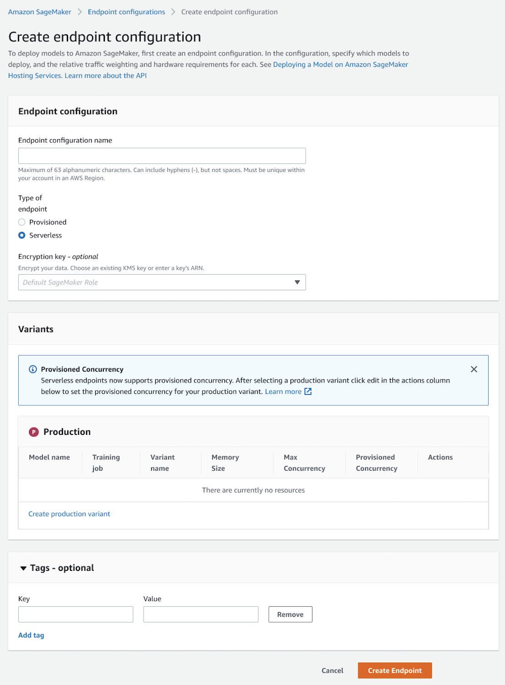
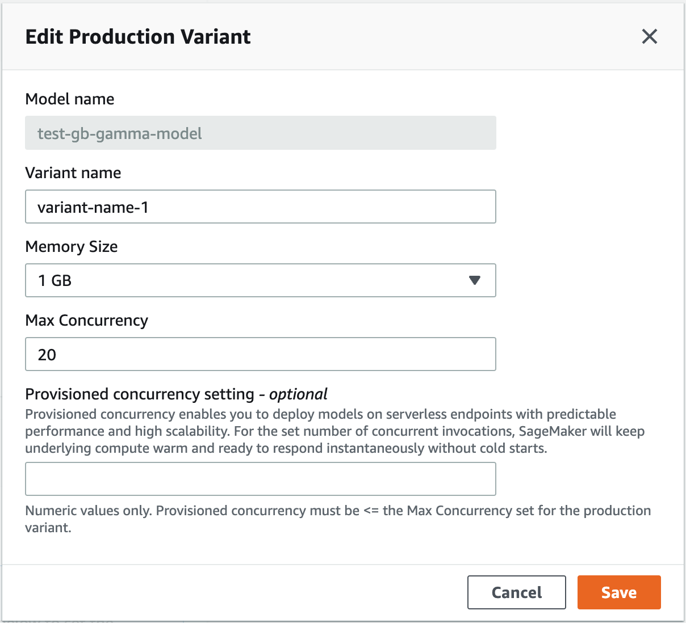
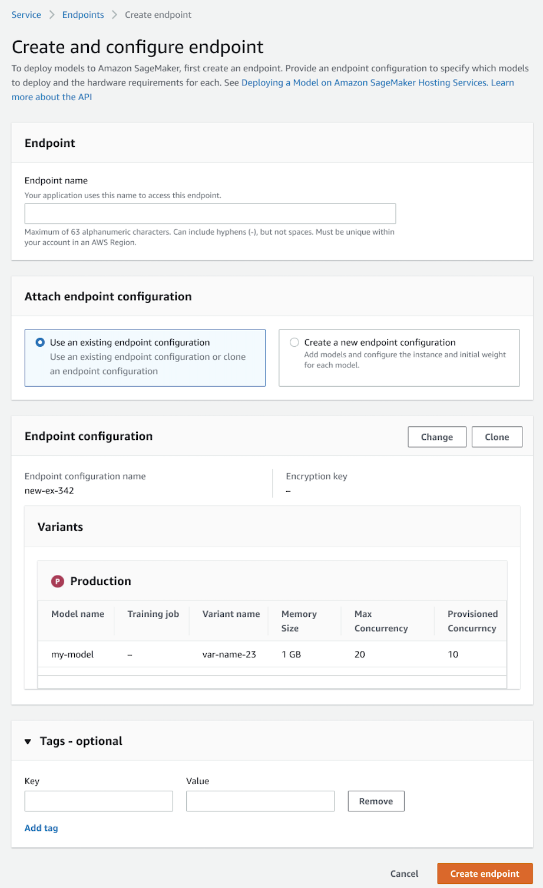

Create a serverless endpoint
To create a serverless endpoint, you can use the Amazon SageMaker console, the APIs, or the AWS CLI. You can create a serverless endpoint using a similar process as a real-time endpoint.
Create a model
To create your model, you must provide the location of your model artifacts and container
image. You can also use a model version from SageMaker Model Registry. The examples in
the following sections show you how to create a model using the CreateModel API, Model
Registry, and the Amazon SageMaker
console
To create a model (using Model Registry)
Model Registry is a feature of SageMaker that helps you catalog and manage versions of your model for use in ML pipelines. To use Model Registry with Serverless Inference, you must first register a model version in a Model Registry model group. To learn how to register a model in Model Registry, follow the procedures in Create a Model Group and Register a Model Version.
The following example requires you to have the ARN of a registered model version and uses
the AWS SDK for Python (Boto3)
For
model_name, enter a name for the model.For
sagemaker_role, you can use the default SageMaker-created role or a customized SageMaker IAM role from Step 4 of the Prerequisites section.For
ModelPackageName, specify the ARN for your model version, which must be registered to a model group in Model Registry.
#Setup import boto3 import sagemaker region = boto3.Session().region_name client = boto3.client("sagemaker", region_name=region) #Role to give SageMaker permission to access AWS services. sagemaker_role = sagemaker.get_execution_role() #Specify a name for the model model_name = "<name-for-model>" #Specify a Model Registry model version container_list = [ { "ModelPackageName":<model-version-arn>} ] #Create the model response = client.create_model( ModelName = model_name, ExecutionRoleArn = sagemaker_role, container_list )
To create a model (using API)
The following example uses the AWS SDK for Python (Boto3)
For
sagemaker_role,you can use the default SageMaker-created role or a customized SageMaker IAM role from Step 4 of the Prerequisites section.For
model_url, specify the Amazon S3 URI to your model.-
For
container, retrieve the container you want to use by its Amazon ECR path. This example uses a SageMaker-provided XGBoost container. If you have not selected a SageMaker container or brought your own, see Step 6 of the Prerequisites section for more information. For
model_name, enter a name for the model.
#Setup import boto3 import sagemaker region = boto3.Session().region_name client = boto3.client("sagemaker", region_name=region) #Role to give SageMaker permission to access AWS services. sagemaker_role = sagemaker.get_execution_role() #Get model from S3 model_url = "s3://DOC-EXAMPLE-BUCKET/models/model.tar.gz" #Get container image (prebuilt example) from sagemaker import image_uris container = image_uris.retrieve("xgboost", region, "0.90-1") #Create model model_name = "<name-for-model>" response = client.create_model( ModelName = model_name, ExecutionRoleArn = sagemaker_role, Containers = [{ "Image": container, "Mode": "SingleModel", "ModelDataUrl": model_url, }] )
To create a model (using the console)
Sign in to the Amazon SageMaker console
. -
In the navigation tab, choose Inference.
-
Next, choose Models.
-
Choose Create model.
-
For Model name, enter a name for the model that is unique to your account and AWS Region.
-
For IAM role, either select an IAM role you have already created (see Prerequisites) or allow SageMaker to create one for you.
-
In Container definition 1, for Container input options, select Provide model artifacts and input location.
-
For Provide model artifacts and inference image options, select Use a single model.
-
For Location of inference code image, enter an Amazon ECR path to a container. The image must either be a SageMaker-provided first party image (e.g. TensorFlow, XGBoost) or an image that resides in an Amazon ECR repository within the same account in which you are creating the endpoint. If you do not have a container, go back to Step 6 of the Prerequisites section for more information.
-
For Location of model artifacts, enter the Amazon S3 URI to your ML model. For example,
s3://DOC-EXAMPLE-BUCKET/models/model.tar.gz -
(Optional) For Tags, add key-value pairs to create metadata for your model.
-
Choose Create model.
Create an endpoint configuration
After you create a model, create an endpoint configuration. You can then deploy your model
using the specifications in your endpoint configuration. In the configuration, you specify
whether you want a real-time or serverless endpoint. To create a serverless endpoint
configuration, you can use the Amazon SageMaker console
To create an endpoint configuration (using API)
The following example uses the AWS SDK for Python (Boto3)
-
For
EndpointConfigName, choose a name for the endpoint configuration. The name should be unique within your account in a Region. -
(Optional) For
KmsKeyId, use the key ID, key ARN, alias name, or alias ARN for an AWS KMS key that you want to use. SageMaker uses this key to encrypt your Amazon ECR image. -
For
ModelName, use the name of the model you want to deploy. It should be the same model that you used in the Create a model step. -
For
ServerlessConfig:-
Set
MemorySizeInMBto2048. For this example, we set the memory size to 2048 MB, but you can choose any of the following values for your memory size: 1024 MB, 2048 MB, 3072 MB, 4096 MB, 5120 MB, or 6144 MB. -
Set
MaxConcurrencyto20. For this example, we set the maximum concurrency to 20. The maximum number of concurrent invocations you can set for a serverless endpoint is 200, and the minimum value you can choose is 1. -
(Optional) To use Provisioned Concurrency, set
ProvisionedConcurrencyto 10. For this example, we set the Provisioned Concurrency to 10. TheProvisionedConcurrencynumber for a serverless endpoint must be lower than or equal to theMaxConcurrencynumber. You can leave it empty if you want to use on-demand Serverless Inference endpoint. You can dynamically scale Provision Concurrency. For more information, see Automatically scale Provisioned Concurrency for a serverless endpoint.
-
response = client.create_endpoint_config( EndpointConfigName="<your-endpoint-configuration>", KmsKeyId="arn:aws:kms:us-east-1:123456789012:key/143ef68f-76fd-45e3-abba-ed28fc8d3d5e", ProductionVariants=[ { "ModelName": "<your-model-name>", "VariantName": "AllTraffic", "ServerlessConfig": { "MemorySizeInMB": 2048, "MaxConcurrency": 20, "ProvisionedConcurrency": 10, } } ] )
To create an endpoint configuration (using the console)
-
Sign in to the Amazon SageMaker console
. -
In the navigation tab, choose Inference.
-
Next, choose Endpoint configurations.
-
Choose Create endpoint configuration.
-
For Endpoint configuration name, enter a name that is unique within your account in a Region.
-
For Type of endpoint, select Serverless.
 -
For Production variants, choose Add model.
-
Under Add model, select the model you want to use from the list of models and then choose Save.
-
After adding your model, under Actions, choose Edit.
-
For Memory size, choose the memory size you want in GB.
 -
For Max Concurrency, enter your desired maximum concurrent invocations for the endpoint. The maximum value you can enter is 200 and the minimum is 1.
-
(Optional) To use Provisioned Concurrency, enter the desired number of concurrent invocations in the Provisioned Concurrency setting field. The number of provisioned concurrent invocations must be less than or equal to the number of maximum concurrent invocations.
-
Choose Save.
-
(Optional) For Tags, enter key-value pairs if you want to create metadata for your endpoint configuration.
-
Choose Create endpoint configuration.
Create an endpoint
To create a serverless endpoint, you can use the Amazon SageMaker console
To create an endpoint (using API)
The following example uses the AWS SDK for Python (Boto3)
-
For
EndpointName, enter a name for the endpoint that is unique within a Region in your account. -
For
EndpointConfigName, use the name of the endpoint configuration that you created in the previous section.
response = client.create_endpoint( EndpointName="<your-endpoint-name>", EndpointConfigName="<your-endpoint-config>" )
To create an endpoint (using the console)
-
Sign in to the Amazon SageMaker console
. -
In the navigation tab, choose Inference.
-
Next, choose Endpoints.
-
Choose Create endpoint.
-
For Endpoint name, enter a name than is unique within a Region in your account.
-
For Attach endpoint configuration, select Use an existing endpoint configuration.
-
For Endpoint configuration, select the name of the endpoint configuration you created in the previous section and then choose Select endpoint configuration.
-
(Optional) For Tags, enter key-value pairs if you want to create metadata for your endpoint.
-
Choose Create endpoint.
